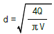
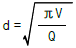
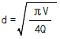
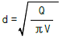
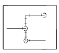
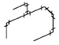
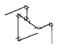
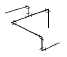
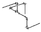

에너지관리기능장 (2002-04-07 기출문제)
1과목: 임의 구분
1. 보일러 연소실의 열부하를 나타내는 단위는?
- kcal/m3· h
- kg/m3· h
- kcal/m3
- kg/m2
(정답률: 80%)

2. 기체연료의 특징을 설명한 것 중 틀린 것은?
- 연소효율이 좋고 조절이 용이하다.
- 완전연소가 가능하므로 전열면 오손이 적다.
- 유황 산화물이나 질소 산화물의 발생이 많다.
- 점화, 소화시 가스폭발 위험성이 있다.
(정답률: 85%)
3. 상당증발량 2500 kg/h, 매시 연료소비량 150 kg 인 보일러가 있다. 급수온도 28 ℃, 증기압력 10 kg/cm2일 때, 이 보일러의 효율은? (단, 연료의 저위발열량은 9800 kcal/kg 이다.)
- 65 %
- 77 %
- 92 %
- 98 %
(정답률: 60%)
4. 사이크론(cyclone) 집진장치의 주원리는?
- 망(screen)에 의한 여과
- 물에 의한 입자의 여과
- 입자의 원심력에 의한 집진
- 압력차에 의한 집진
(정답률: 92%)
5. 증기의 건도를 향상시키는 방법으로 틀린 것은?
- 증기주관 내의 드레인을 제거한다.
- 기수분리기를 사용하여 수분을 제거한다.
- 고압증기를 저압으로 감압시킨다.
- 과열저감기를 사용하여 향상시킨다.
(정답률: 62%)
6. 보일러 연료로서 중유가 석탄보다 좋은 점을 설명한 것으로 틀린 것은?
- 집진장치가 필요없다.
- 단위체적당 발열량이 크다.
- 자동제어가 용이하다.
- 매연의 발생이 적다.
(정답률: 80%)
7. 기체연료의 연소시 공기비의 일반적인 값은?
- 0.8 – 1.0
- 1.1 - 1.3
- 1.3 – 1.6
- 1.8 - 2.0
(정답률: 75%)
8. 보일러 매연 발생의 원인이 아닌 것은?
- 불순물 혼입
- 연소실 과열
- 통풍력 부족
- 점화조작 불량
(정답률: 78%)
9. 수관 보일러에서 강관을 확관하여 관판에 부착시킬 때 강관의 최적 두께 감소율은?
- 2 ∼ 3 %
- 6 ∼ 7 %
- 9 ∼ 10 %
- 12 ∼ 13 %
(정답률: 52%)
10. 굴뚝높이 100 m, 배기가스의 평균온도 200 ℃, 외기온도 27 ℃, 굴뚝내 가스의 외기에 대한 비중을 1.⑤ 라 할 때 통풍력은?
- 26.3 mmAq
- 29.3 mmAq
- 36.3 mmAq
- 39.3 mmAq
(정답률: 37%)
11. 내열도의 구분에 따라 저온용 보온재에 해당하는 것은?
- 석면
- 그라스 울
- 우모 펠트
- 암면
(정답률: 74%)
12. 자동제어의 신호전달 방식 중 신호전달 거리가 가장 짧은 것은?
- 유압식
- 공기압식
- 전기식
- 전자식
(정답률: 65%)
13. 보일러를 건식 보존할 때 보일러에 채워 두는 가스로 가장 적합한 것은?
- CO2
- SO2
- N2
- O2
(정답률: 84%)
14. 최고사용압력이 14 kg/cm2인 강철제 증기보일러의 안전밸브 호칭지름은 얼마 이상으로 해야 하는가?
- 15 mm
- 20 mm
- 25 mm
- 32 mm
(정답률: 47%)
15. 대기압 하에서 펌프의 최대흡입 양정(揚程)은 이론상 몇 m 정도인가?
- 10 m
- 20 m
- 15 m
- 30 m
(정답률: 64%)
16. 베르누이의 정리에서 전수두는 어떤 수두들의 합인가?
- 위치수두, 압력수두, 속도수두
- 압력수두, 손실수두, 저항수두
- 위치수두, 저항수두, 속도수두
- 전수두, 위치수두, 압력수두
(정답률: 77%)
17. 원관에서 난류가 흐르고 있을 때 손실 수두는?
- 속도의 3제곱에 비례한다.
- 관경에 비례한다.
- 관길이에 반비례한다.
- 관의 마찰계수에 비례한다.
(정답률: 69%)
18. 랭킨사이클에서 복수기의 압력이 낮아질 때의 현상으로 옳은 것은?
- 열효율이 낮아진다.
- 복수기의 포화온도는 상승한다.
- 터빈 출구부의 증기의 건도가 높아진다.
- 터빈 출구부의 부식 문제가 생긴다.
(정답률: 29%)
19. "일정량의 기체의 체적은 압력에 반비례하고 절대온도에 비례한다"는 법칙은?
- 보일의 법칙
- 샬의 법칙
- 보일-샬의 법칙
- 켈빈의 법칙
(정답률: 87%)
20. 감압밸브는 작동방법에 따라 3가지로 나눌 때 해당되지 않는 것은?
- 벨로즈형
- 파일럿형
- 피스턴형
- 다이어프램형
(정답률: 56%)
2과목: 임의 구분
21. 보온재의 열전도율에 관한 사항으로 맞는 것은?
- 비중이 작으면 열전도율도 작아진다.
- 온도가 낮아질수록 열전도율은 커진다.
- 비중과 열전도율은 무관하다.
- 수분을 많이 포함할수록 열전도율은 작아진다.
(정답률: 48%)
22. 지름 1.2 m 의 보일러 동판에 20 kg/cm2의 증기압력이 작용하면 동판의 두께는 약 몇 mm 로 해야 하는가? (단, 재료의 허용응력 800 kg/cm2, 이음효율은 90 % 이다.)
- 12 mm
- 17 mm
- 22 mm
- 25 mm
(정답률: 43%)
23. 보온재가 갖추어야 할 성질로 잘못 설명된 것은?
- 열전도율이 작을 것
- 가벼울 것
- 기계적 강도가 있을 것
- 밀도가 클 것
(정답률: 79%)
24. 강철제 유류용 보일러의 용량이 얼마 이상이면 공급 연료량에 따라 연소용 공기를 자동조절하는 장치를 갖추어야 하는가? (단, 난방 및 급탕 겸용 보일러임)
- 2 T/h
- 5 T/h
- 10 T/h
- 20 T/h
(정답률: 70%)
25. 보일러 자동제어에서 어떤 조건이 구비되지 않았을 때 다음 단계의 동작이 이루어지지 않는 형태의 제어는?
- 추치제어
- 피드백 제어
- 인터록 제어
- 디지털 제어
(정답률: 79%)
26. 열정산에서 출열 항목에 속하는 것은?
- 증기의 보유 열량
- 공기의 보유 열량
- 연료의 현열
- 화학 반응열
(정답률: 53%)
27. 원심식 송풍기의 풍량을 Q(m3/min), 회전수 N(rpm), 풍압을 P(mmAq), 날개의 직경을 D 라고 할 때, 다음 관계식 중 틀린 것은?
- Q∝N
- Q∝D3
- P∝N
- P∝D2
(정답률: 73%)
28. 배관의 상부에서 관을 지지하는 것으로, 관의 상하 방향 이동을 허용하면서 일정한 힘으로 관을 지지하는 것은?
- 콘스탄트 행거
- 리지드 행거
- 슈
- 앵커
(정답률: 63%)
29. 설비 배관에 있어서 유속을 V, 유량을 Q라 할 때 관경 d를 구하는 식은?




(정답률: 74%)
30. 동관의 용도와 무관한 것은?
- 급유관
- 배수관
- 냉매관
- 열교환기용관
(정답률: 74%)
31. 1일 급수량이 36000 ℓ 인 보일러에서 급수 중 염화물의 이온농도를 100 ppm, 보일러수의 허용 이온농도를 2000 ppm으로 할 때 1일 분출량(ℓ/day)은?
- 1625.3 ℓ/day
- 1785.1 ℓ/day
- 1894.7 ℓ/day
- 1945.4 ℓ/day
(정답률: 45%)
32. 증기의 압력이 상승할 때 나타나는 현상이 아닌 것은?
- 포화수의 부피가 증가한다.
- 엔탈피가 증가된다.
- 물의 현열이 감소된다.
- 증기의 잠열이 감소된다.
(정답률: 46%)
33. 강관의 용접이음 특징을 잘못 설명한 것은?
- 보온 피복재의 시공이 쉽다.
- 변형과 수축의 염려가 적다.
- 가공시간이 단축되며 재료비가 절약된다.
- 유체의 저항손실이 감소된다.
(정답률: 59%)
34. 연돌의 유효 높이를 증가시키는 방법으로 옳은 것은?
- 배기가스의 온도를 높인다.
- 배기가스의 배출 속도를 늦춘다.
- 배기가스의 유량을 감소시킨다.
- 연돌의 굴곡부 개소를 증가한다.
(정답률: 67%)
35. 보일러 설치시 주의사항으로 틀린 것은?
- 수압이 낮은 수도관은 보일러에 직결한다.
- 보일러는 수평으로 설치한다.
- 보일러는 보일러실 바닥보다 높게 설치하고, 유지관리를 위한 공간이 필요하다.
- 보일러는 내화구조로 시공된 보일러실에 설치한다.
(정답률: 78%)
36. 개방식과 밀폐식 팽창탱크에 공통적으로 필요한 것은?
- 통기관
- 압력계
- 팽창관
- 안전밸브
(정답률: 66%)
37. 케리 오버(carry over)의 발생 원인이 아닌 것은?
- 증기부하가 과대하다.
- 수면이 고수위에 있다.
- 주증기밸브를 천천히 열었다.
- 보일러수에 불순물 등이 많이 용해되어 있다.
(정답률: 74%)
38. 보일러 연소장치인 공기조절장치와 무관한 것은?
- 윈드박스
- 보염기
- 버너타일
- 플레임 아이
(정답률: 77%)
39. 주어진 평면도를 등각투상도로 나타낼 때 맞는 것은?





(정답률: 85%)
40. 최고사용압력이 5 kg/cm2 인 강철제 보일러의 수압시험 압력과 유지시간은?
- 5.5 kg/cm2, 30분
- 9.5 kg/cm2, 30분
- 8.5 kg/cm2, 1시간
- 10.0 kg/cm2, 1시간
(정답률: 51%)
3과목: 임의 구분
41. 자연순환 온수난방에서 보일러와 방열기와의 수직높이 차이가 6 m 이고, 송수온도 80 ℃, 환수온도 68 ℃ 일 때 자연 순환력은 몇 mmAq 인가? (단, 68 ℃ 물의 비중량은 978.94 kg/m3, 80 ℃ 물의 비중량은 971.84 kg/m3 이다.)
- 17.76 mmAq
- 35.52 mmAq
- 42.6 mmAq
- 85.2 mmAq
(정답률: 28%)
42. 증기에 관한 기본적 성질을 설명한 것으로 옳은 것은?
- 순수한 물질은 한 개의 포화온도와 포화압력이 존재한다.
- 습증기 영역에서 건도는 항상 1보다 크다.
- 증기가 갖는 열량은 4 ℃ 의 순수한 물을 기준하여 정해진다.
- 대기압 상태에서 엔탈피의 변화량과 주고받은 열량의 변화량은 같다.
(정답률: 52%)
43. 보일러 가동 중 압축응력을 받아 압궤를 일으킬 수 있는 부분이 아닌 것은?
- 수관
- 연소실
- 노통
- 관판
(정답률: 73%)
44. 다음 pH값 중 강산성의 성질을 지닌 것은?
- pH 2
- pH 6
- pH 7
- pH 14
(정답률: 62%)
45. 보일러 급수처리 방법과 관계없는 것은?
- 자연적 처리법
- 물리적 처리법
- 전기적 처리법
- 화학적 처리법
(정답률: 65%)
46. 보일러의 성능에서 증발배수란?
- 1시간당 발생 증기량을 1시간당 연료 사용량으로 나눈 값
- 증기와 물의 엔탈피 차를 539 로 나눈 값
- 1시간당 발생 증기량을 539 로 나눈 값
- 1시간당 발생 증기량을 연소률로 나눈 값
(정답률: 51%)
47. 연소 안전장치에서 플레임 로드(flame rod)를 옳게 설명한 것은?
- 열적 검출 방식으로 화염의 발열을 이용한 것이다.
- 화염의 전기 전도성을 이용한 것이다.
- 화염의 방사선을 전기 신호로 바꾸어 이용한 것이다.
- 화염의 자외선 광전관을 사용한 것이다.
(정답률: 67%)
48. 보일러에서 그루빙(grooving)은 어느 부분에 많이 발생하는가?
- 경판 구석의 둥근 부분
- 동체 내부나 수관 내면
- 동체의 증기와 접촉하는 부분
- 동체의 표준수면과 접촉하는 부분
(정답률: 49%)
49. 보일러에서 저온부식을 일으키는 성분은?
- 바나듐
- 탄산가스
- 황
- 일산화탄소
(정답률: 70%)
50. 신설 보일러의 청정화를 도모할 목적으로 행하는 소다 끓이기에서 사용하는 약품이 아닌 것은?
- 수산화나트륨
- 인산나트륨
- 탄산나트륨
- 탄산칼슘
(정답률: 67%)
51. 점성계수의 차원(dimension)은?
- M L-2 T2
- M L-1 T-1
- M L T2
- M L2 T2
(정답률: 55%)
52. 관 지지구 중 리스트레인트의 종류에 포함되지 않는 것은?
- 앵커
- 스톱
- 서포터
- 가이드
(정답률: 46%)
53. 나사용 패킹으로서 화학약품에 강하고, 내유성이 크며, 내열 범위가 -30 ∼ 130 ℃ 인 것은?
- 네오프렌
- 액상 합성수지
- 테프론
- 일산화 연(鉛)
(정답률: 36%)
54. 전기 용접봉의 피복제 중, 석회석이나 형석이 주성분으로 되어있는 것은?
- 저수소계
- 일미나이트계
- 고셀룰로스계
- 고산화티탄계
(정답률: 84%)
55. 도수분포표에서 도수가 최대인 곳의 대표치를 말하는 것은?
- 중위수
- 비 대칭도
- 모우드(mode)
- 첨도
(정답률: 74%)
56. 일정통제를 할 때 1일당 그 작업을 단축하는데 소요되는 비용의 증가를 의미하는 것은?
- 비용구배(Cost slope)
- 정상 소요시간(Normal duration)
- 비용견적(Cost estimation)
- 총비용(Total cost)
(정답률: 75%)
57. 서블릭(therblig)기호는 어떤 분석에 주로 이용되는가?
- 연합작업분석
- 공정분석
- 동작분석
- 작업분석
(정답률: 39%)
58. 관리도에서 점이 관리한계내에 있고 중심선 한쪽에 연속해서 나타나는 점을 무엇이라 하는가?
- 경향
- 주기
- 런
- 산포
(정답률: 47%)
59. 모집단의 참값과 측정 데이터의 차를 무엇이라 하는가?
- 오차
- 신뢰성
- 정밀도
- 정확도
(정답률: 56%)
60. 준비작업시간이 5분, 정미작업시간이 20분, lot수 5, 주작업에 대한 여유율이 0.2라면 가공시간은?
- 150분
- 145분
- 125분
- 1⑤분
(정답률: 59%)